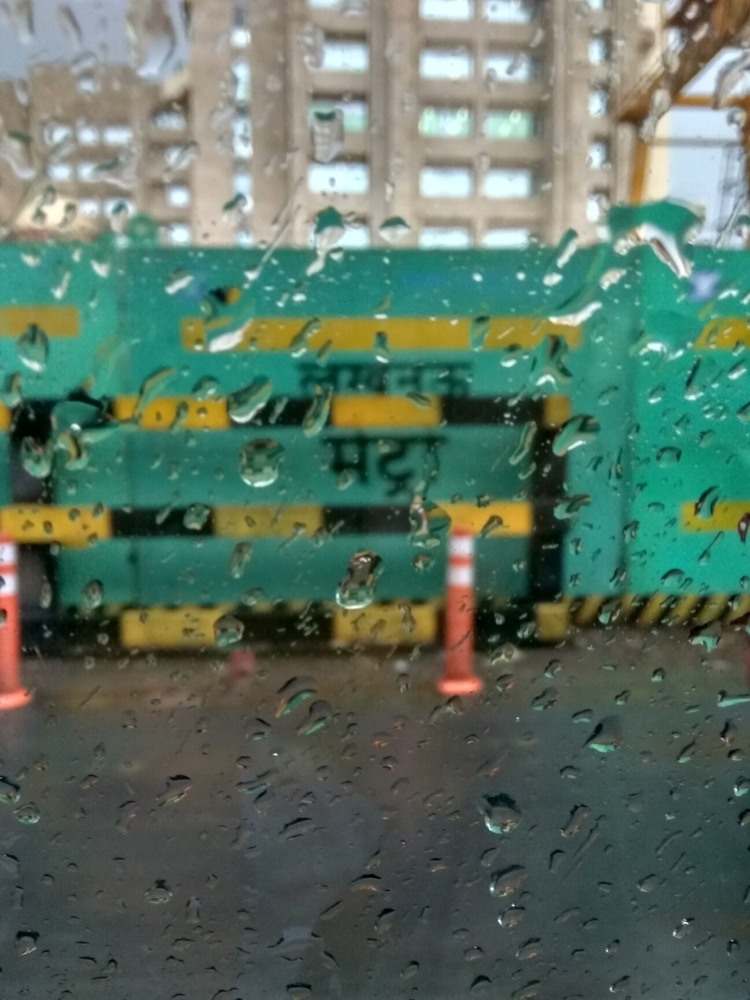
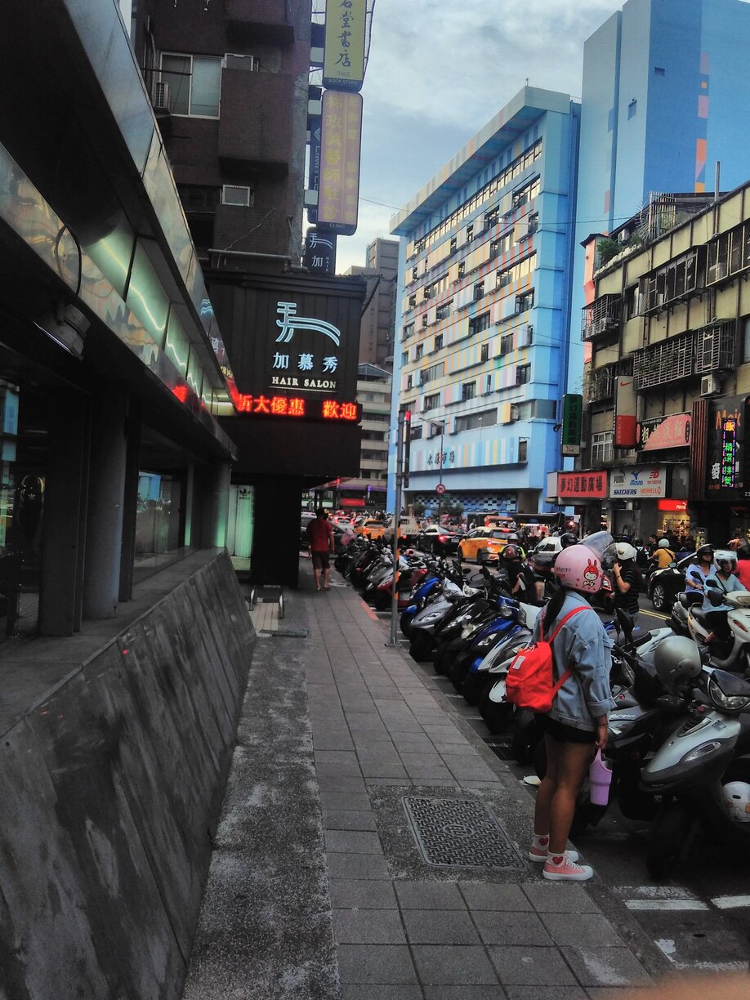
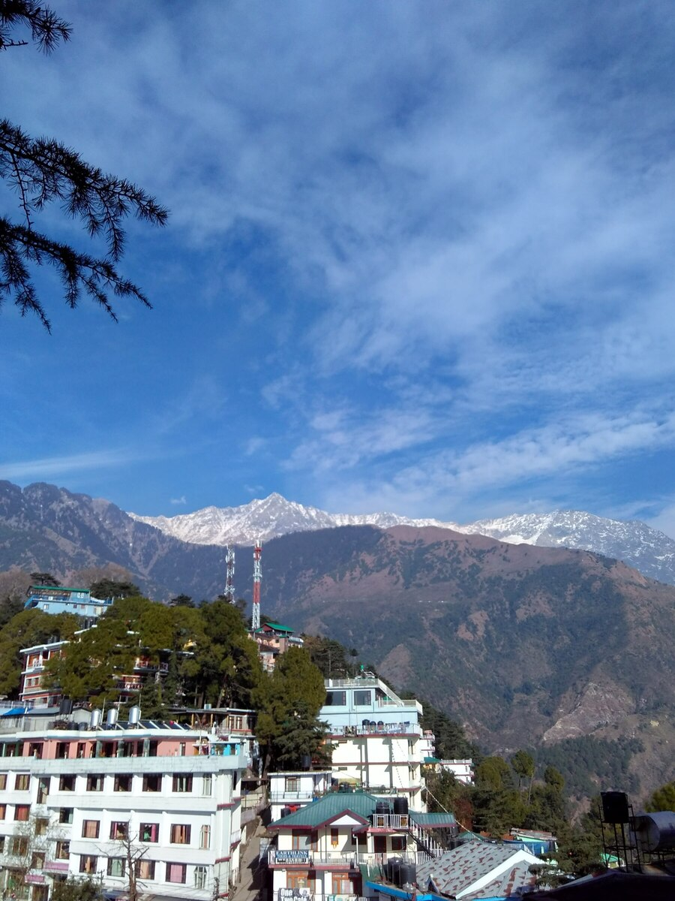
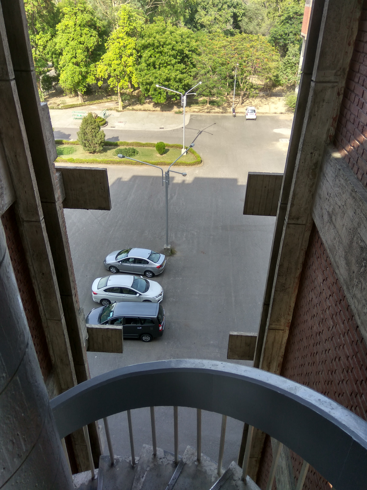
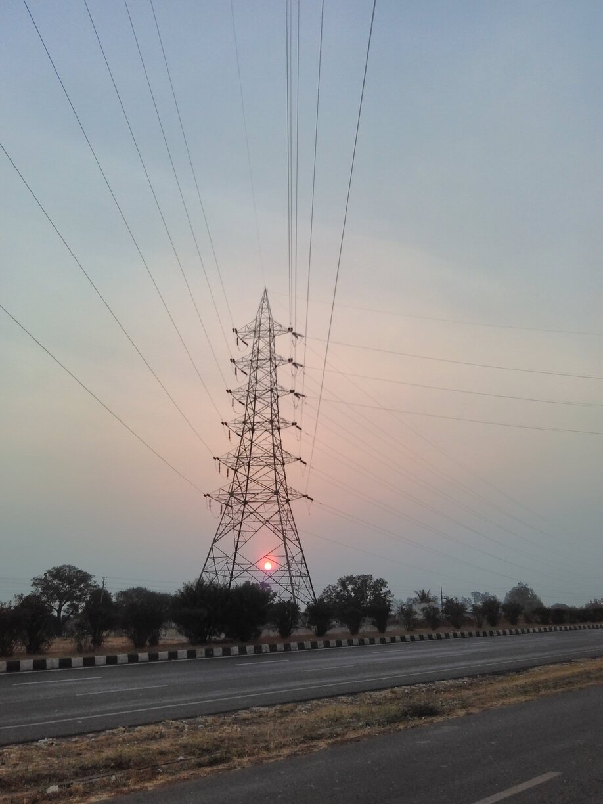
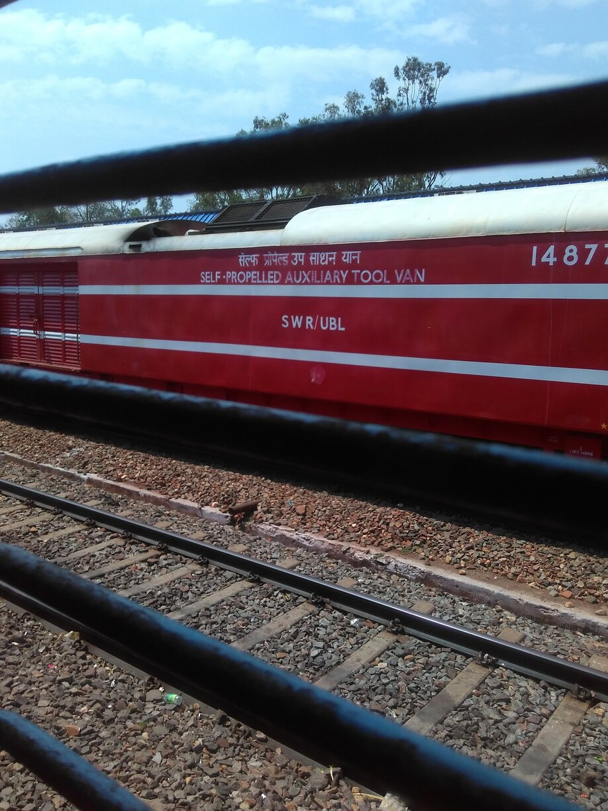
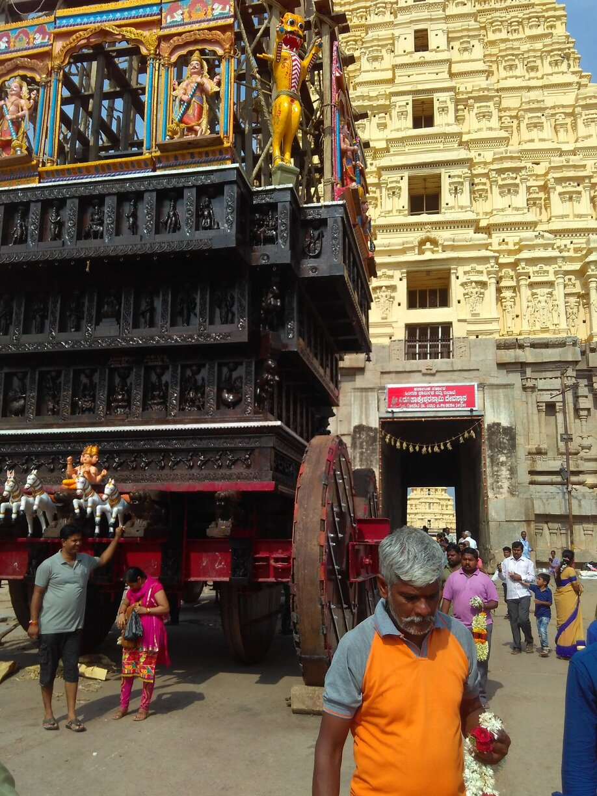

activities
- I was one of the tutors for the Advanced Instructional School on Geometric Analysis which was held from 9 to 28 December 2019 at Indian Institute of Technology Bombay, Mumbai, India.
- From August 26 - September 6 2019, I visited International Centre for Theoretical Sciences, Bangalore to attend a discussion meeting on Multi-scale Analysis and Theory of Homogenization. I presented a research lecture at this event titled "Simplicity of Spectral Edges and Applications to Homogenization" whose video recording may be found here on YouTube.
- I was on the organizing committee of the Diamond Jubilee Symposium of the Department of Mathematics, Indian Institute of Technology Bombay which was held in 4-6 January 2019.






